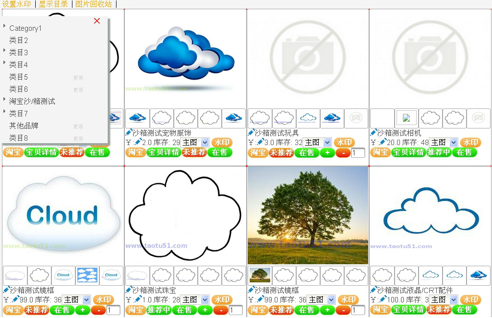
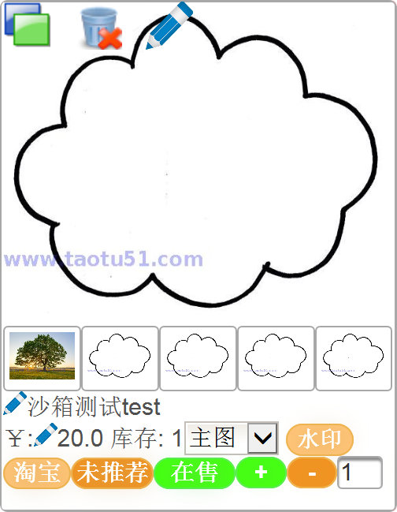
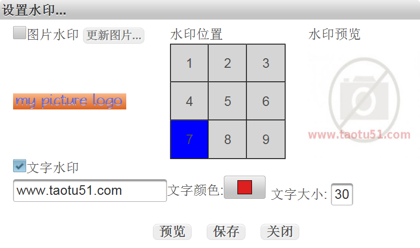
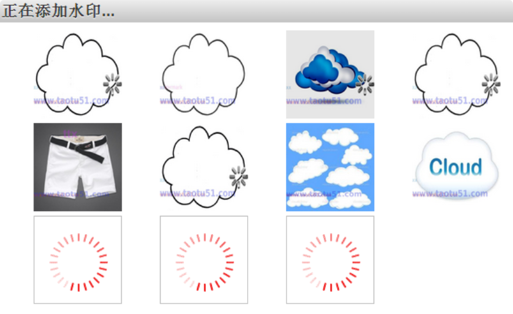
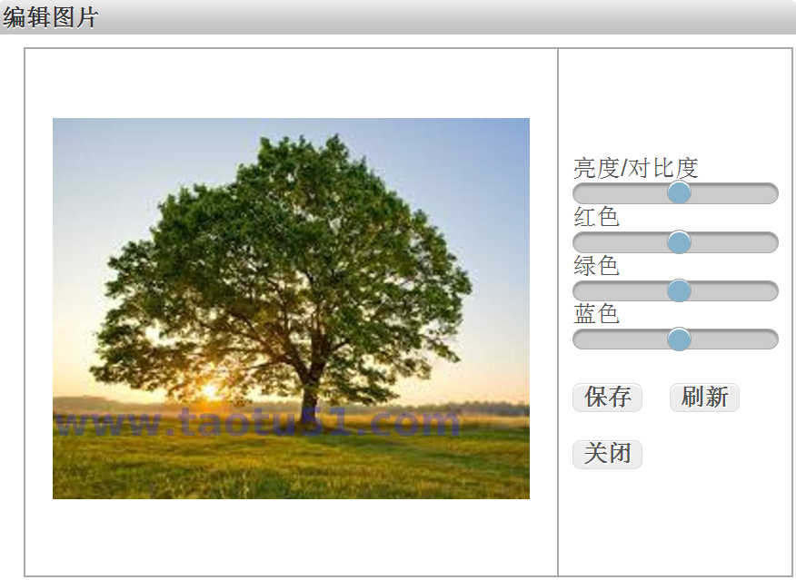
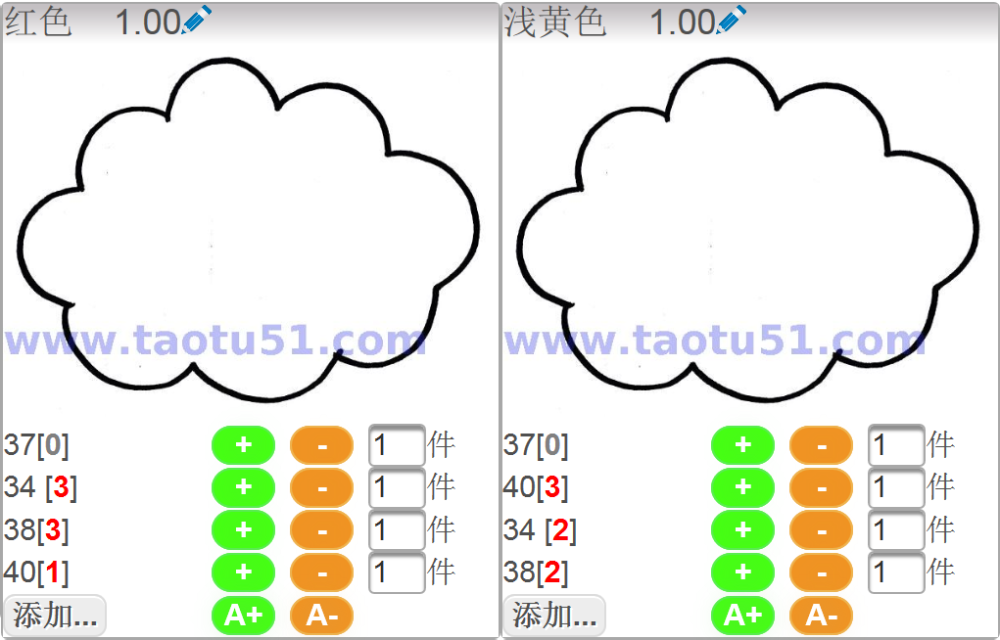
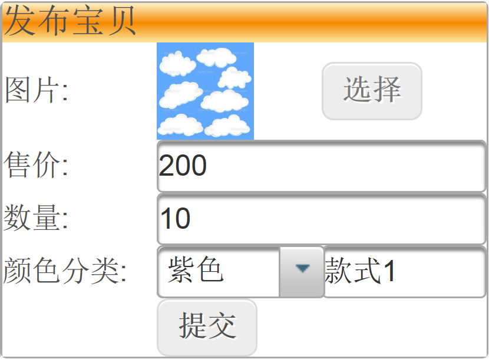

|
|  |
软件简介
图片是展示商品的关键素材，用户网购因无法看到实际商品，只能通过商品的图片来了解商品。
最好的商品图片残缺也会影响商品的销售。
图片相当于广告，如果这个广告不好，那就没法吸引用户购买。
美观的商品图片能吸引更多的用户，促进销量的提高。淘图无忧能帮您快速检查店铺中所有在售商品的图片，
对所有图片进行在线编辑，添加，删除和替换操作，还可以对图片加水印，包括
自定义图片水印和文字水印。淘图无忧还能帮您快速批量更改库存，快速发布宝贝，更改标题和价格。在已有链接下发布一件宝贝只需5秒。
|
|
图片更换
快速检查店铺所有的商品图片，直观的显示所有图片，包括残缺的图片一键添加/删除/替换商品主图 一键添加/删除/替换商品属性图片 所有图片操作的原始图片自动备份,意外的操作导致图片的删除或修改可恢复 大小不限，自动调整图片尺寸到淘宝允许的范围内 |
 |
|   |
自动水印
更新图片时可设置自动打水印，防止图片被盗，支持自定义图片水印和文字水印一键添加主图,属性图或全部图片水印 |
|
图片编辑
在线编辑销售商品的图片,包括图片亮度,对比度和色差调整编辑后的图片直接更新到淘宝中 |
 |
|   |
宝贝管理
秒速发布宝贝一键商品标题，价格和库存修改 一键商品上架和下架 一键商品橱窗推荐和取消橱窗推荐 |
© 2014 淘图无忧. All Rights Reserved |